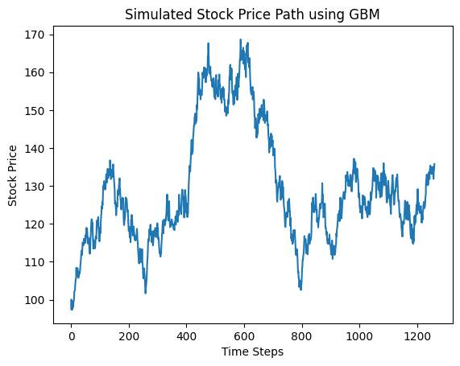
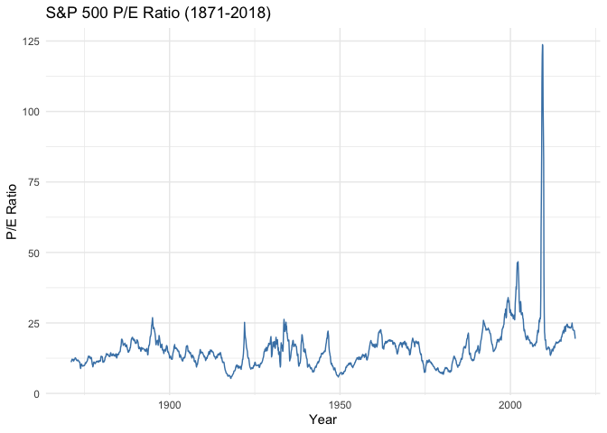
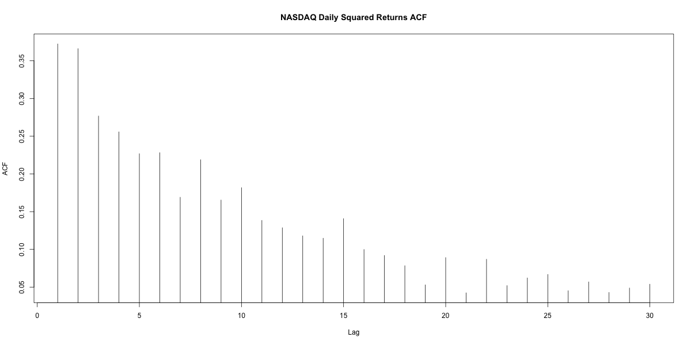

i'm a senior at princeton university, class of '27, studying operations research and financial engineering with a minor in mathematics. i'm interested in reinforcement learning in finance, financial econometrics, and quantitative research and trading. i've worked as a quant intern at transmarket group and as a data engineer at lasagna capital.
this was a project i did through the ahs science research institute, where i wanted to see whether a swarm of autonomous robots could learn a coordinated exploration policy for an unknown environment. the setup is built on top of slam (simultaneous localization and mapping), and i trained the agents with deep q-learning (dqn), which approximates the action-value function with a neural network. the reason a neural network is needed here is that the joint state space across multiple agents is way too large for a tabular q-table to handle. the agents learn to cover as much of the space as possible while avoiding ground that another agent has already mapped. i ran all of the experiments in webots, which is a physics-based robotics simulator with realistic collisions and sensor noise. in the end, the trained swarm consistently beat the uncoordinated baselines on both coverage time and map completeness.
5th place · florida ssef | navy league award & scholarship | district champion pbrsef | superior rating · sigma xi international research symposium | mad science grant recipient

this is my ongoing senior thesis, where i look at how reinforcement learning agents can learn trading policies on financial time series. instead of relying on a single historical record, i generate the training data myself from stochastic differential equations. i start with geometric brownian motion and then build up to richer dynamics, and each one gets discretized with an euler-maruyama scheme so that i can produce large families of synthetic price paths. the agent observes a discretized market state and learns a value function through q-learning, and i evaluate it by looking at the distribution of final pnl across thousands of simulated paths against a random baseline. the reason i like working in this controlled, model-driven setting is that it lets me probe how an agent's learned behavior depends on the underlying data-generating process before i move on to real market data.

this is a two-part empirical study that spans both equities and fixed income. in the first part, i ask whether the earnings yield and dividend yield of the s&p 500 can predict its own returns at horizons ranging from one month out to four years, using 147 years of price and valuation data. the interesting result here is that the r² climbs sharply as the horizon grows, which hints at long-run reversion in equity valuations. in the second part, i fit the vasicek and cir short-rate models to over 60 years of 5-year treasury yields, using both exact mle and an euler approximation, and recover the mean-reversion speed, long-run level, and volatility out of each one.

this is a three-part study of return dynamics that mixes empirical work with simulation. in the first part, i document the stylized facts in nasdaq and ibm returns at daily, weekly, and monthly frequencies. the returns themselves look like white noise, but their squares clearly do not, and the tails stay fatter than normal even as you aggregate up to longer frequencies. in the second part, i stress-test the standard portmanteau diagnostics through simulation and confirm that box-pierce and ljung-box both hit their asymptotic χ²(m) targets. in the third part, i break those same diagnostics with a nonlinear process whose acf stays flat while its squared acf lights up.
econometric and statistical methods applied to finance, covering asset return models, linear time series analysis, volatility models, capm, multifactor pricing, portfolio allocation, and simulation methods for financial derivatives.
probabilistic methods in combinatorics and theoretical computer science, including linearity of expectation, the second moment method, the lovász local lemma, martingales, and large deviation inequalities.
fundamental theorems and algorithms of graph theory including connectivity, matchings, graph coloring, planarity, the four-color theorem, extremal problems, and network flows.
fourier series, fourier transforms, and their applications to classical partial differential equations such as the heat and wave equations, organized around fourier analysis on periodic functions, the real line, and higher dimensions.
combinatorial techniques including the pigeonhole principle, inclusion-exclusion, generating functions, ramsey theory, extremal combinatorics, and connections to linear algebra and spectral graph theory.
theory of lebesgue measure and integration on the line and in n-dimensional space, with a rigorous foundation in the construction and properties of lebesgue measure and the theory of fourier series.
ordinary differential equations and their engineering applications, including linear and nonlinear equations, laplace transforms, eigenvalue methods, series solutions, and an introduction to partial differential equations.
stochastic models of resource sharing covering erlang's formulas, little's law, poisson processes, renewal processes, and equilibrium markov chains, with applications in call centers, healthcare, and smart cities.
quantitative methods for designing and analyzing financial products including arbitrage pricing, risk-neutral pricing in discrete and continuous time, black-scholes, heston model, credit derivatives, and term structure of interest rates.
analytical and computational tools for optimization including least-squares methods, linear programming, duality, the simplex method, interior point methods, network flow, and integer programming.
probability theory and its applications in modeling uncertainty, covering poisson processes, random walks, brownian motion, branching processes, and markov chains with decision-making applications.
broad introduction to machine learning paradigms including linear models, svms, clustering, dimensionality reduction, deep neural networks, and reinforcement learning, with python implementations.
survey of fundamental algorithms and data structures in use today, with emphasis on sorting, searching, and graph algorithms, including analysis of performance and practical applications.
lower-level programming in c focusing on modularity, abstraction, testing, debugging, and performance, with an overview of computing environments and architectures foundational to advanced computer science.
introduction to probability and statistics covering estimation, confidence intervals, hypothesis testing, and regression, using real-world datasets and the statistical software r.
abstract treatment of linear systems, transformations, eigenvalues, spectral theorem, svd, and jordan normal forms, with applications in cryptography, image compression, machine learning, and ranking algorithms.
rigorous multivariable calculus covering vectors, differentiation and integration in several variables, vector fields, line and flux integrals, and higher-dimensional generalizations of the fundamental theorem of calculus.
introduction to computer science through scientific, engineering, and commercial applications, covering hardware and software systems, programming in java, algorithms, data structures, and scientific computing.
rigorous treatment of classical electricity and magnetism, emphasizing the unification of electric and magnetic forces and their connection to special relativity.
mathematically rigorous classical mechanics including variational methods, lagrangian dynamics, central-force motion, rigid body motion, small oscillations, and an introduction to special relativity.
fundamental chemistry principles — stoichiometry, equilibria, thermodynamics, quantum mechanics, and chemical bonding — applied to modern materials including metals, semiconductors, and polymers.
i'm an avid athlete — i run d1 track & field at princeton. i also love to hike and explore nature whenever i get the chance.